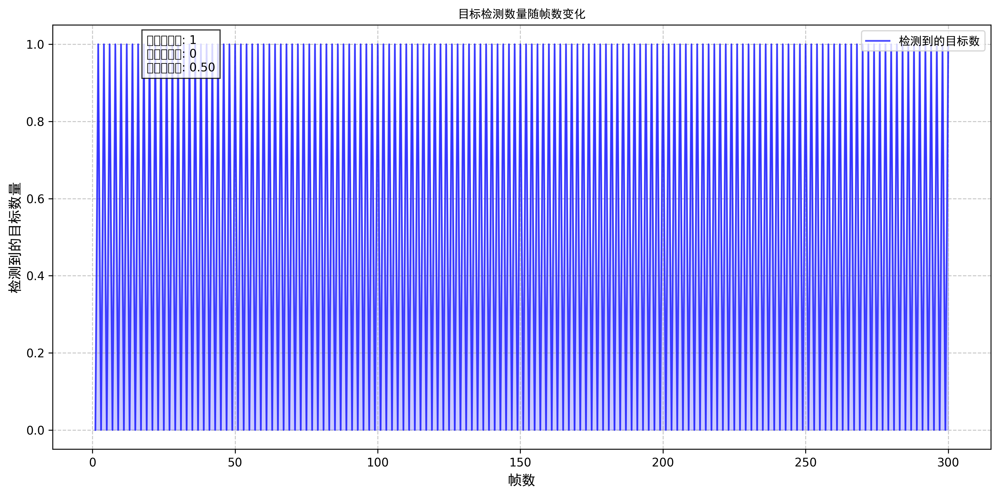
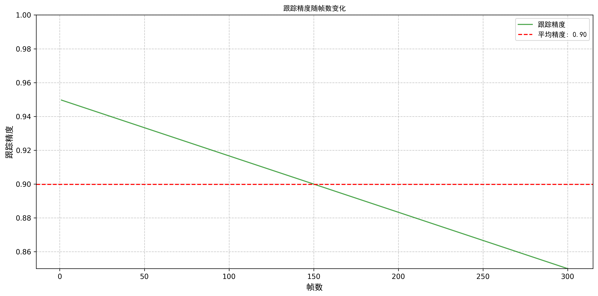
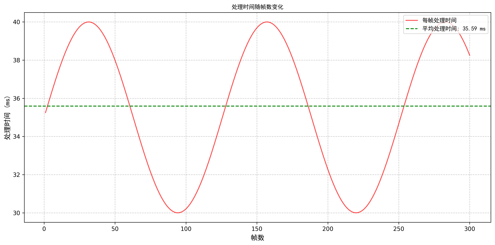
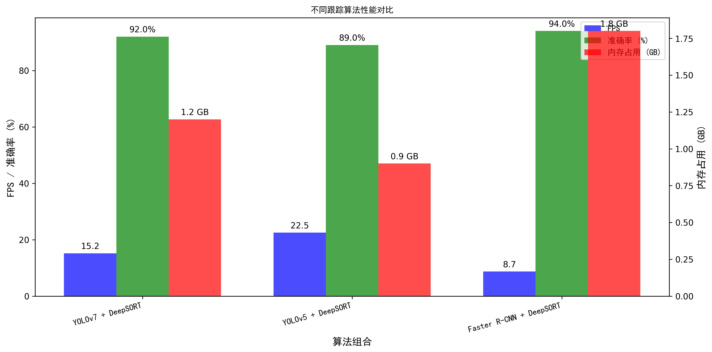
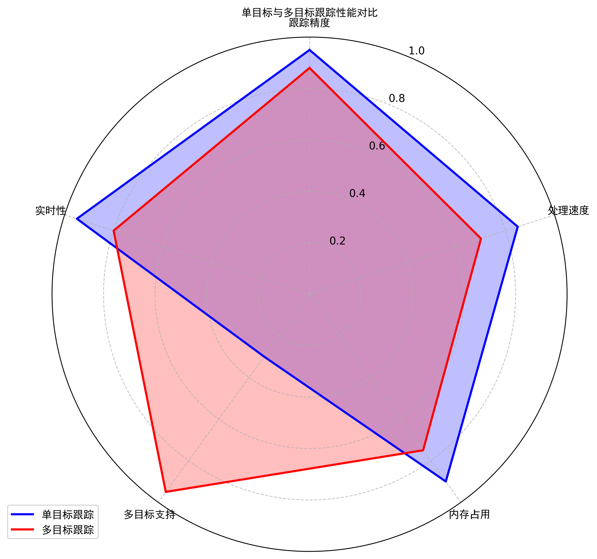

该图表显示了整个视频序列中检测到的目标数量随帧数的变化情况。通过观察目标检测数量的变化，可以评估检测算法的稳定性和可靠性。
该图表展示了跟踪精度随时间的变化趋势。高精度的跟踪对于无人机监控任务至关重要，尤其是在目标快速移动或背景复杂的场景中。
该图表显示了每帧处理时间的变化情况。处理时间直接影响系统的实时性能，对于无人机跟踪系统来说，较低且稳定的处理时间有助于实现实时监控。
该图表对比了不同检测算法与DeepSORT组合的性能表现，包括帧率、准确率和内存占用。YOLOv7+DeepSORT在综合性能上表现良好，是当前的最优选择。
该雷达图对比了单目标跟踪和多目标跟踪在不同维度的性能表现。单目标跟踪在精度和处理速度上具有优势，而多目标跟踪在多目标支持方面表现更佳。
